教程：快速入门
本教程逐步说明快速将首个 FLAC3D 模型求解所需的操作，很少花时间解释所使用的各个用户界面元素。重点是创建模型，并初步熟悉界面。接下来的教程：示范模型——FLAC3D 的使用机制（Tutorial: Illustrative Model — Mechanics of Using FLAC3D）更详细地解释建议建模顺序及涉及的用户界面元素。
此处假定 FLAC3D 已运行，并已处理初始设置对话框。
从主菜单选择。
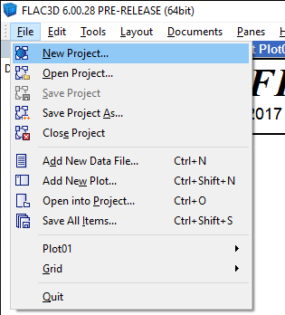
随后将新项目文件保存为“first”。

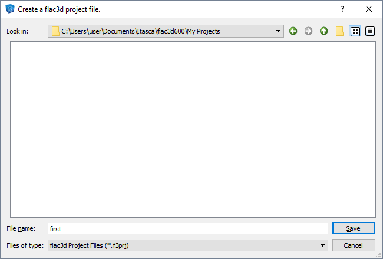
FLAC3D 用户界面非常灵活，可自定义。首先将程序配置为与本教程相同的基本布局。从主菜单选择。
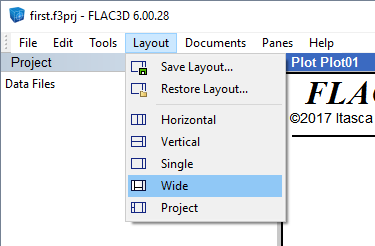
接下来，使用构建块（Building Blocks）创建模型几何形状。从主菜单选择。
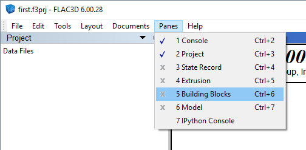
随后在空白灰色区域任意位置单击鼠标左键。FLAC3D 将询问是否创建构建块集合。输入集合名“first”，取消勾选包含初始块体选项，再按创建集合。
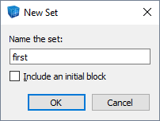
此时集合为空。按工具栏上的导入块体按钮（ ）。
）。
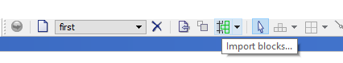
注意
如果看不到任何模板选项，或该模板不可用，请转到，创建应用程序数据目录，然后重试。
在导入块体对话框中，选择“CylinderTSectionWithWall”条目，按。
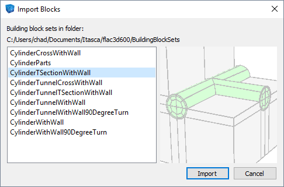
选择将块体放在视图中心选项，按，导入到默认位置。
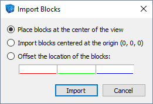
块体将被导入，完成后处于选中状态。单击空白区域取消选择。右键拖动可旋转块体进行查看。此时模型应与下图相近。

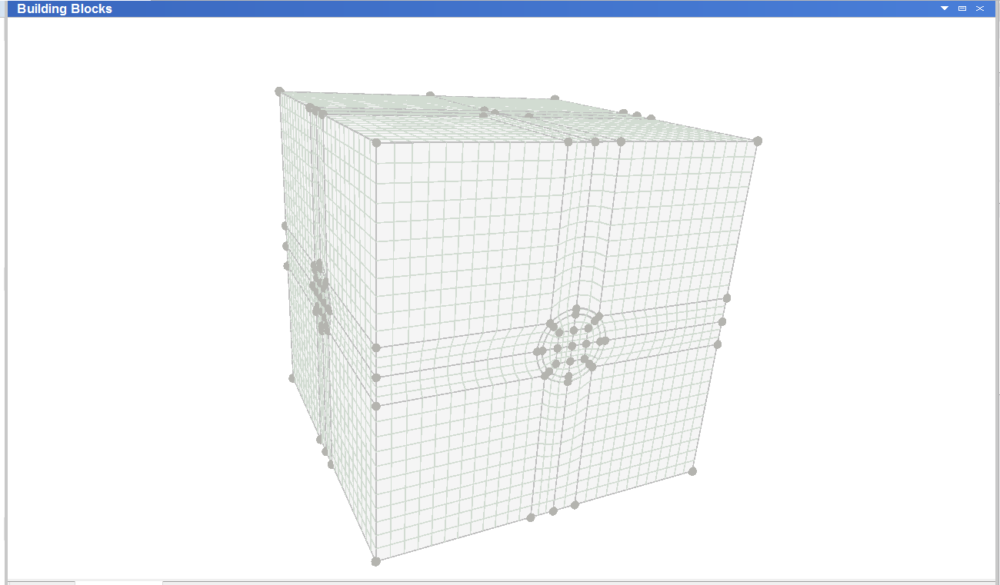
通常此时应按具体情况进行必要定制，但本教程直接从块体创建网格单元。
选择工具栏最右侧的生成网格单元工具按钮（ ）。
）。

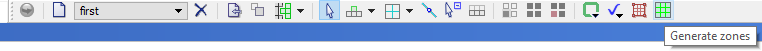
这会生成表示模型的实际 FLAC3D 网格单元，并显示在模型窗格（Model Pane）中，以便查看、命名和操作。
模型应与下图类似。

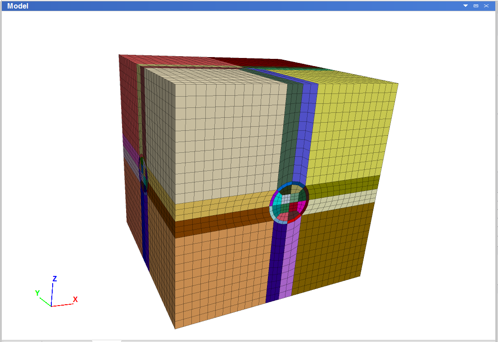
对于这个简单模型，在模型窗格中只需添加模型边界名称。单击工具栏右侧附近的为面指定分组名…工具按钮（ ）。
）。

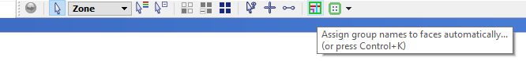
在出现的自动分组对话框中，勾选忽略现有分组名，以获得最简单的边界命名。然后按按钮。
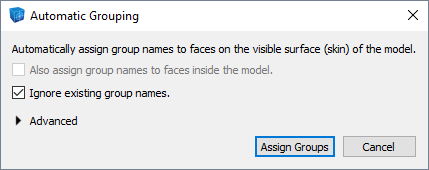
模型初始几何描述和区域命名已完成。此时建议保存模型，便于以后参考。单击界面底部的 i 控制台（Console）窗格将其激活。
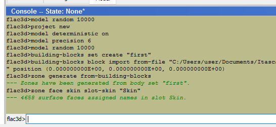
然后选择主工具栏中的另存为工具按钮（）。
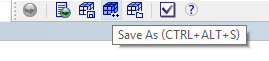
将当前模型状态保存为“geometry”。

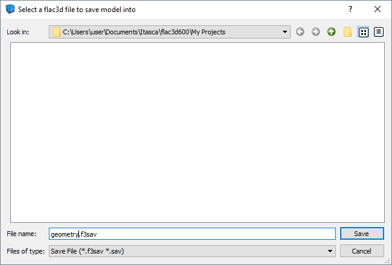
请注意，此保存状态出现在左侧 i 项目（Project）窗格中。
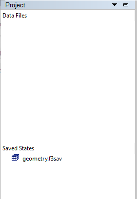
此时可用 i 状态记录（State Record）窗格创建数据文件，以便需要时重新创建该状态。但对许多用途，直接使用保存文件已足够，本简单示例即采用这种方式继续。
模型的进一步设置需要在数据文件中直接输入命令。FLAC3D 模型完全由命令驱动（command-driven），尽管如上所示，部分命令可由交互式用户界面元素自动生成。要在编辑器（editor）中创建新数据文件，请转到菜单项。
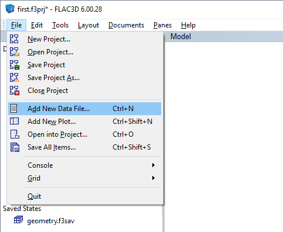
在随后对话框中，创建名为“first”的新数据文件。

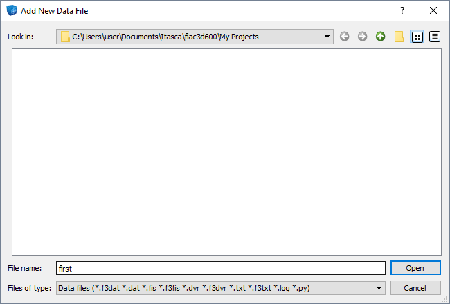
注意
在编辑器中编写命令时，可随时按 Ctrl+spacebar 使用行内帮助（inline help），或按 F1 激活上下文帮助，也可结合两者使用。
数据文件第一条命令使用 恢复模型（model restore） 恢复刚创建的几何模型状态，作为起点。在编辑器顶部输入（或从本文档复制粘贴）以下一行。（从此处开始，将后续灰框中出现的命令清单依次输入或复制粘贴到数据文件。）
model restore "geometry"
model large-strain off
下一步为模型赋予本构模型和性质。通过 指定网格单元本构模型（zone cmodel assign） 命令赋予本构模型，通过 设置网格单元属性（zone property） 命令赋予性质。请注意，必须先赋予本构模型，才能指定相应模型的性质。
; 本构模型和属性
zone cmodel assign mohr-coulomb
zone property bulk 65000 shear 30000 density 2.0
zone property cohesion 10 friction 34 tension 1.0
接着，为模型指定边界条件。本例在四侧和底部设置滚动边界，顶部保持自由。此前已在模型窗格（Model Pane）中，通过为面指定分组名…工具（）自动为边界命名，名称为“North”“South”“East”“West”“Top”和“Bottom”。边界条件通常使用 施加网格单元面条件（zone face apply） 命令指定，滚动边界通过 velocity-normal 边界条件创建。
; 边界条件
zone face apply velocity-normal 0 range group "West" or "East"
zone face apply velocity-normal 0 range group "North" or "South"
zone face apply velocity-normal 0 range group "Bottom"
为何拆为三条独立命令，见位移边界（Displacement Boundary）中的讨论。
接着需要指定初始条件。对本简单情况，仅有重力应力，因此使用 设置重力命令（model gravity） 命令指定重力，并通过 zone initialize-stresses 命令初始化重力引起的应力。
; 初始条件
model gravity 9.81
zone initialize-stresses
接着求解模型，使其达到初始平衡。由于内部网格划分略不规则，zone initialize-stresses 命令可使模型接近平衡，但并非完全平衡。需要求解模型才能达到完全平衡。由于模型已接近平衡，耗时很少。达到平衡后，以 初始（initial） 名称保存状态，作为后续修改的起点。
; 求解至初始平衡
model solve
model save "initial"
在较大的 FLAC3D 项目中，实际可用 恢复模型（model restore） 初始（"initial"） 开始一个新数据文件，继续研究而不必反复建立初始平衡。本例规模较小、运行较快，因此只在单个数据文件中继续构建模型。
下一步开挖隧道。虽然可立即移除网格单元（通过 单元本构模型指定空（zone cmodel assign null） 改为空模型，或通过 zone delete 删除），但更好的做法是逐渐开挖网格单元，避免准惯性效应夸大开挖造成的破坏。可通过 单元松弛开挖（zone relax excavate） 命令实现，如下。
; 开挖隧道
zone relax excavate range group "Space"
注意
分组名“Space”来自用于生成网格单元的导入构建块（Building Blocks）模板。
随后再次求解至平衡，并保存最终模型状态。
; 开挖后求解至平衡
model solve
model save "first"
最终完整数据文件应如下所示：
model restore "geometry"
model large-strain off
; 本构模型和属性
zone cmodel assign mohr-coulomb
zone property bulk 65000 shear 30000 density 2.0
zone property cohesion 10 friction 34 tension 1.0
; 边界条件
zone face apply velocity-normal 0 range group "West" or "East"
zone face apply velocity-normal 0 range group "North" or "South"
zone face apply velocity-normal 0 range group "Bottom"
; 初始条件
model gravity 9.81
zone initialize-stresses
; 求解至初始平衡
model solve
model save "initial"
; 开挖隧道
zone relax excavate range group "Space"
; 开挖后求解至平衡
model solve
model save "first"
按工具栏左侧的执行按钮（ ）运行数据文件（见下图）。
）运行数据文件（见下图）。
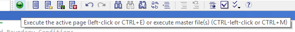
如果出现错误，对话框将显示错误消息，编辑器中相应行高亮。只需修正问题，必要时参考本教程，然后再次按执行按钮。
在编写本教程所用计算机上，开挖后求解至平衡略多于一分钟。在此期间，可以打开绘图，观察模型演化并检查最终结果。如果循环信息对话框影响操作，可按按钮，将循环信息嵌入 i 控制台（Console）窗格。
单击用户界面中央大区域中的 Plot01 选项卡，打开默认 i 绘图（Plot）窗格。在右侧控制面板（Control Panel）中，单击构建绘图工具按钮（ ）旁的向下箭头，选择网格单元项。
）旁的向下箭头，选择网格单元项。
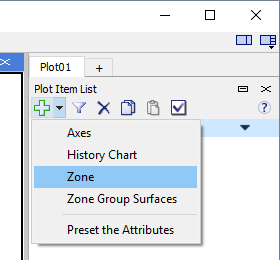
右键拖动查看后，初始绘图应与下图类似。

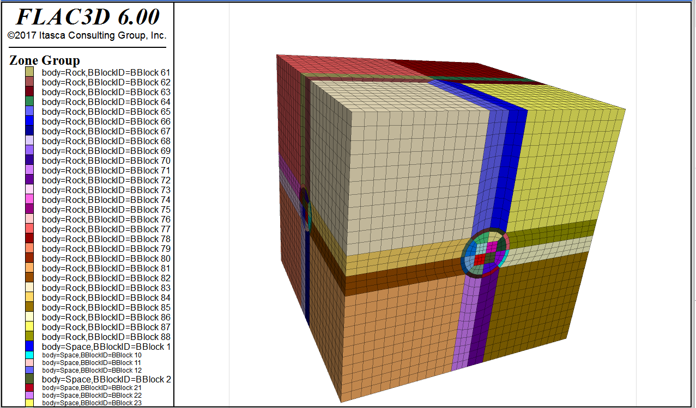
在控制面板（Control Panel）的属性部分，单击标为槽位的下拉框（当前为任意），选择 body。
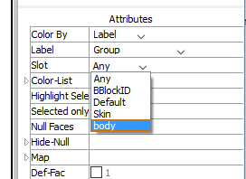
这将显示构建块模板所赋予的分组。如果模型计算已全部完成，绘图中的隧道网格单元已被开挖；否则，它们可能作为名为“Space”的第三个分组显示。

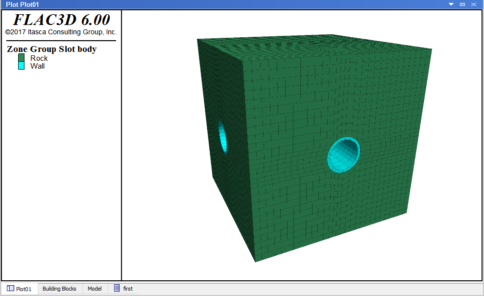
要查看模型结果，在着色依据属性中选择等值线，在数值属性中选择应力，再在分量属性中选择最小主应力。
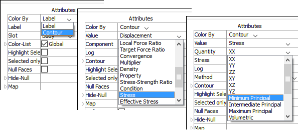
结果应与下图类似。

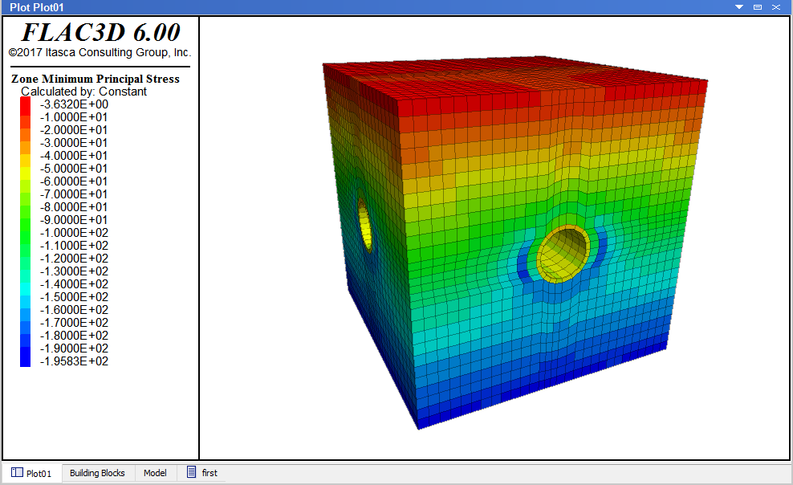
如果求解仍在早期阶段，可以看到组成隧道的网格单元中应力降低，随后这些网格单元完全移除。如果已经完成，可以重新运行“first.dat”以观察此过程。
在着色依据属性中重新选择标签，再在标签属性中选择状态，即可查看破坏范围。结果图应如下所示。

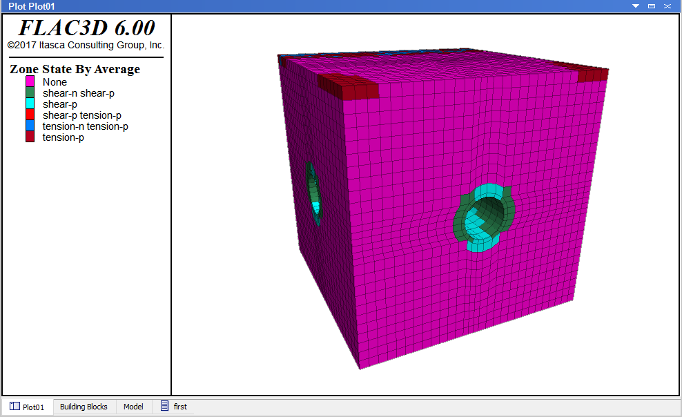
此时从主菜单选择保存项目。请注意，项目文件存储已创建的绘图，它们不属于模型状态（保存文件）的一部分。
| 这些内容对您有帮助吗？… | FLAC3D © 2019, Itasca | 原文更新于 2020 年 10 月 8 日 |